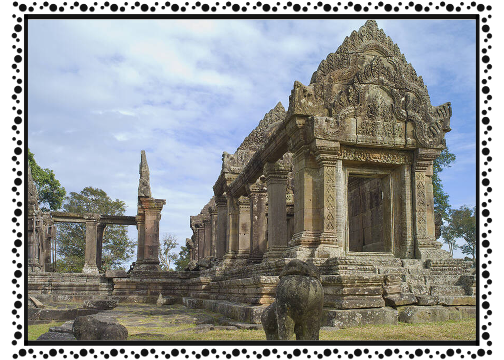

ខេត្ត និងក្រុងនៃព្រះរាជាណាចក្រកម្ពុជា
ព្រះវិហារ

ប្រាសាទព្រះវិហារ (Prasat Preah Vihear) ស្ថិតនៅភាគខាងជើងនៃប្រទេសកម្ពុជាក្នុងភូមិសាស្ត្រ ភូមិធម្មជាតិ ឃុំស្រអែម ស្រុកជាំក្សាន្ត ខេត្តព្រះវិហារ[១] និងពីអតីកាលមានទីតាំងក្នុងភូមិគ១ ឃុំកន្ទួត ស្រុកជាំក្សាន្ត ខេត្តព្រះវិហារ។ ចំណែកពីអតីកាលស្រុកជាំក្សាន្តស្ថិតនៅក្នុងខេត្តកំពង់ធំ។ ប្រាសាទព្រះវិហារជាប្រាសាទភ្នំដែលកសាងនៅលើកំពូលភ្នំព្រះវិហារនៃជួរភ្នំដងរែក ដែលមានរយៈកម្ពស់ ៦២៥ម៉ែត្រ ធៀបទៅនិងនីវ៉ូទឹកសមុទ្រ។ សិលាចារឹកប្រាសាទខ្នា បានហៅភ្នំដងរែកថា ភ្នំកំផែង ឬភ្នំជញ្ជាំង។ ប្រជាជនថៃហៅភ្នំដងរែកថា ភ្នំវែង ចំណែកប្រជាជនឡាវហៅថា ភ្នំដេនមឿង។ ប្រាសាទព្រះវិហារស្ថិតនៅជាប់នឹងព្រំប្រទល់ខេត្តស៊ីសាកេត នៃប្រទេសថៃ។ ប្រាសាទព្រះវិហារមានចម្ងាយប្រមាណ ៥៥គីឡូម៉ែត្រពីសាលាស្រុកជាំក្សាន្ត ១០០គីឡូម៉ែត្រពីទីរួមខេត្តព្រះវិហារ ជាង ១៥០គីឡូម៉ែត្រពីទីរួម ខេត្តសៀមរាប និងចម្ងាយប្រមាណ ៤០០គីឡូម៉ែត្រពី រាជធានីភ្នំពេញ ។ ជួរភ្នំដងរែកជាខណ្ឌសីមាព្រំប្រទល់ធម្មជាតិអន្តរជាតិរវាងប្រទេសកម្ពុជា និងប្រទេសថៃ។ ប្រាសាទព្រះវិហារស្ថិតនៅលើចំណុចខ្សែស្រប១៤.២៤ ទៅ១៨នៃរយៈទទឹងខាងកើត និងចំណុចខ្សែស្រប១០៤ ទៅ៤១.០២នៃរយៈបណ្តោយខាងជើង។ ប្រាសាទព្រះវិហារមានទីតាំងស្ថិតនៅលើខ្នងភ្នំព្រះវិហារ ស្ថិតនៅលើផ្ទៃដីទំហំ៨០០ គុណនឹង ៤០០ ម៉ែត្រការ៉េ។ ភ្នំប្រាសាទព្រះវិហារនេះមានលក្ខណៈចោទខ្លាំងពីខាងប្រទេសកម្ពុជា និងជម្រាលពីខាងប្រទេសថៃ។ សព្វថ្ងៃនេះអ្នកលក់ដូរ និងប្រជាជនតំបន់នោះភាគច្រើនតែងតែឡើងទៅលើភ្នំតាមផ្លូវស៊ី១ ពីព្រោះថាផ្លូវនោះវាងាយស្រួលក្នុងការធ្វើដំណើរ។ ម្យ៉ាងទៀតអ្នកទេសចរអាចឡើងភ្នំព្រះវិហារតាមរយៈជណ្តើរបុរាណនៅផ្នែកខាងកើតនៃភ្នំ ដែលត្រូវបានកសាងតាំងពីសម័យជាមួយប្រាសាទមកម្លេះ តែត្រូវបានខូចខាតយ៉ាខ្លាំង តែនៅពេលបច្ចុប្បន្នមានការជួសជុលនិងយកឈើធ្វើជាជណ្តើរជំនួសវិញក្រោមការជួសជុលរបស់ អាជ្ញាធរជាតិព្រះវិហារ។
ក្នុងការធ្វើដំណើរទៅកាន់ប្រាសាទព្រះវិហារគេអាចជ្រើសរើសតាមរយៈផ្លូវពីរគឺ៖
- ចេញពី ខេត្តសៀមរាបតាមផ្លូវទៅកាន់ ប្រាសាទបន្ទាយស្រី ឆ្ពោះទៅកាន់ ស្រុកអន្លង់វែង រហូតមកដល់វង្វង់មូលស្រអែម រួចបន្តដំណើរប្រហែល ២០គីឡូម៉ែត្រទៀត និងដល់ចំណតគ១ ដែលជាកន្លែងលក់សំបុត្រឡើងប្រាសាទព្រះវិហារ។
- ចេញដំណើរពី រាជធានីភ្នំពេញ ទៅ ខេត្តកំពង់ធំ បន្ទាប់មកដល់ថ្នល់បំបែកសៀមរាប-ព្រះវិហារ រួចបត់ស្តាំកាត់តាម រមណីយដ្ឋានសំបូរព្រៃគុក ឬប្រាសាទសំបូរព្រៃគុក រហូតដល់ផ្លូវបំបែកភ្នំដែករួចបត់ឆ្វេងមកទីរួម ខេត្តព្រះវិហារ ហើយបន្តដំណើររហូតដល់វង្វង់មូលស្រអែម។